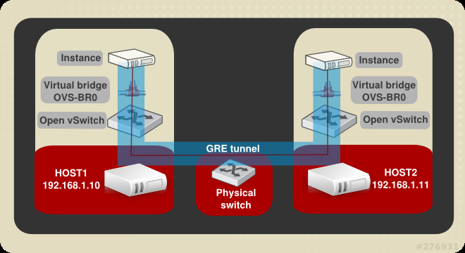
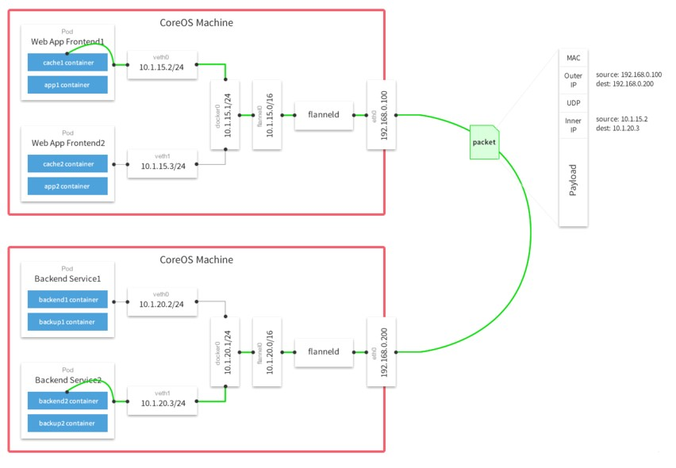

#Docker 主机间网络的四种打通方式
1静态路由;
2.ovswitch大二层
3.flaneld路由+隧道
4quagga动态路由
四种方式：

前言：前面的部分一直都是单机跑docker，但实际生产环境不可能只用一台来跑。肯定会用到多台，因为他们都是内部私有ip，那么多台主机之间的容器如何通信？这个是个很头疼的问题！目前主流几种方法如下：
1、使用路由机制打通网络
2、使用Open vSwitch（OVS）打通网络
3、使用flannel来打通网络
4、使用Quagga来实现自动学习路由
第一种：使用路由机制打通网络
使用Linux的路由来打通网络
优点：
- 常规路由技术
- 使用传统网络技术
- 简单
- 高性能
缺点：
- 与现有网络融为一体
- 灵活性低
现在有两台Docker实例：

file:///C:/Users/Don/Documents/My%20Knowledge/temp/d12921d0-891e-4a7f-9f37-4addd92a86fc_128_files/6325797f-dd7c-433e-aacc-dd447f7cbbaf.png
具体如图，因为Docker默认的内部ip为172.17.42网段，所以必须要修改其中一台的默认网段以免ip冲突。
#vim /etc/sysconfig/docker-network
DOCKER_NETWORK_OPTIONS= --bip=172.18.42.1/16 -H fd:// -H=unix:///var/run/docker.sock
#systemctl daemon-reload
#reboot

file:///C:/Users/Don/Documents/My%20Knowledge/temp/d12921d0-891e-4a7f-9f37-4addd92a86fc_128_files/96e55b20-d530-4526-ac7a-7763b2628350.png
ok。现在就可以开始操作了。
其实就是执行两台route add命令
docker 130上执行 route add -net 172.18.0.0/16 gw 192.168.18.128
docker 128上执行 route add -net 172.17.0.0/16 gw 192.168.18.130
ok，现在两台宿主机里的容器就可以通信了。
第二种：使用Open vSwitch（OVS）打通网络
是一种主流的虚拟化大二层技术
优点：
- 灵活
- 对现有物理网络没要求
- 业界主流
缺点：
- 软件封装导致性能下降
- 复杂度相对较高
- 排错难度高
流程图如下：


file:///C:/Users/Don/Documents/My%20Knowledge/temp/d12921d0-891e-4a7f-9f37-4addd92a86fc_128_files/75f44505-cf9f-47bf-bc49-8fa40b8d3f03.png
file:///C:/Users/Don/Documents/My%20Knowledge/temp/d12921d0-891e-4a7f-9f37-4addd92a86fc_128_files/33f2ed6e-ad14-4839-87ac-ad43333d8c3d.png
首先安装ovs的rpm包
# yum install openvswitch-2.4.0-1.x86_64.rpm #安装软件包
# /etc/init.d/openvswitch restart #重启服务
# /etc/init.d/openvswitch status #查看状态
安装网桥管理工具
#yum -y install bridge-utils
配置网络
ovs-vsctl add-br br0
ovs-vsctl add-port br0 gre1 -- set interface gre1 type=gre option:remote_ip=192.168.18.128
#添加br0到本地docker0，使得容器流量通过ovs流经tunnel
brctl addif docker0 br0
ip link set dev br0 up
ip link set dev docker0 up
iptables -t nat -F; iptables -F
ip route add 172.17.0.0/16 dev docker0
其余节点同样的配置，注意ip地址即可。
第三种：使用flannel来打通网络
新设计的Flannel，一种结合了路由机制与隧道技术
原理：每个主机配置一个ip段和子网个数。例如，可以配置一个覆盖网络使用 10.100.0.0/16段，每个主机/24个子网。因此主机a可以接受10.100.5.0/24，主机B可以接受10.100.18.0/24的包。flannel使用etcd来维护分配的子网到实际的ip地址之间的映射。对于数据路径，flannel 使用udp来封装ip数据报，转发到远程主机。选择UDP作为转发协议是因为他能穿透防火墙。例如，AWS Classic无法转发IPoIP or GRE 网络包，是因为它的安全组仅仅支持TCP/UDP/ICMP。
下图解释了数据报通过覆盖网络转发的路线：

file:///C:/Users/Don/Documents/My%20Knowledge/temp/d12921d0-891e-4a7f-9f37-4addd92a86fc_128_files/b0997f01-6d7f-4265-993d-f17bde472efc.jpg
部署也不是很复杂，仅需要etcd和flannel两项支持即可。
etcd一般部署在单独机器上，那么flannel就部署在docker节点上，每个docker节点上都需部署。
1、部署etcd，假设地址为192.168.1.121
yum -y install etcd #安装软件包
vim /etc/etcd/etcd.conf #修改配置文件
修改为如下：（默认只监听本地回环地址）
ETCD_LISTEN_CLIENT_URLS="http://0.0.0.0:2379"
ETCD_ADVERTISE_CLIENT_URLS="http://0.0.0.0:2379"
systemctl restart etcd #重启服务
etcdctl set /coreos.com/network/config '{ "Network": "10.1.0.0/16" }' #添加一条网络配置记录，这个配置将用于flannel分配给每个Docker的虚拟IP地址段
2、部署flannel
从https://github.com/coreos/flannel/releases 下载稳定版本，这里以0.5.5版本为例。
tar zxf flannel-0.5.5-linux-amd64.tar.gz #解压文件
cp flannel-0.5.5/* /usr/bin/ #拷贝可执行文件至系统变量path
使用systemd来管理flannel服务
vim /usr/lib/systemd/system/flanneld.service
[Unit]
Description=Flanneld overlay address etcd agent
After=network.target
Before=docker.service
[Service]
Type=notify
EnvironmentFile=/etc/sysconfig/flanneld
EnvironmentFile=-/etc/sysconfig/docker-network
ExecStart=/usr/bin/flanneld -etcd-endpoints=${FLANNEL_ETCD} $FLANNEL_OPTIONS
[Install]
RequiredBy=docker.service
WantedBy=multi-user.target
设置etcd地址
vim /etc/sysconfig/flanneld
FLANNEL_ETCD= "http://192.168.1.121:2379"
由于flannel将覆盖docker0网桥，所以如果Docker服务已启动，则停止Docker服务
编写flannel启动脚本，并加入自启动
vim /etc/init.d/start_flannel.sh
#!/bin/bash
systemctl stop docker #停止docker服务
systemctl restart flanneld #启动flannel服务
mk-docker-opts.sh -i #生成环境变量
source /run/flannel/subnet.env #将环境变量生效
ifconfig docker0 ${FLANNEL_SUBNET} #设置docker0的网卡ip
systemctl start docker #启动docker服务
ok，现在跨主机容器间已经可以通信。
第四种：使用Quagga来实现自动学习路由
其实这种方式是基于第一种方式的路由技术，只不过路由信息不需要自己手动添加，而是自动学习。试想一下，如果有10台docker，那么每台docker就需要手动写9条路由信息，是不是很惨？
Linux上安装路由器的软件名为Quagga，它可以配置很多种企业级的动态路由协议。我使用的是RIPV2和OSPF同时开启，但安装Quagga的方法和配置命令，太过于繁琐。所以网上有大神将其Docker化了。
下载Quagga镜像：
docker pull index.alauda.cn/georce/router
特别需要注意的是：docker0的网段不能一样，所以需要修改docker的子网地址，参考第一种的设置办法
运行镜像：
docker run -itd --name=router --privileged --net=host index.alauda.cn/georce/router
执行 ip route 查看下路由表，已有别的docker0的网段信息。

file:///C:/Users/Don/Documents/My%20Knowledge/temp/d12921d0-891e-4a7f-9f37-4addd92a86fc_128_files/4ee4e27c-94ed-4b68-8cd3-838467346fe3.png
file:///C:/Users/Don/Documents/My%20Knowledge/temp/d12921d0-891e-4a7f-9f37-4addd92a86fc_128_files/cd3ce34f-621a-488b-818d-ff2c69e365f0.png